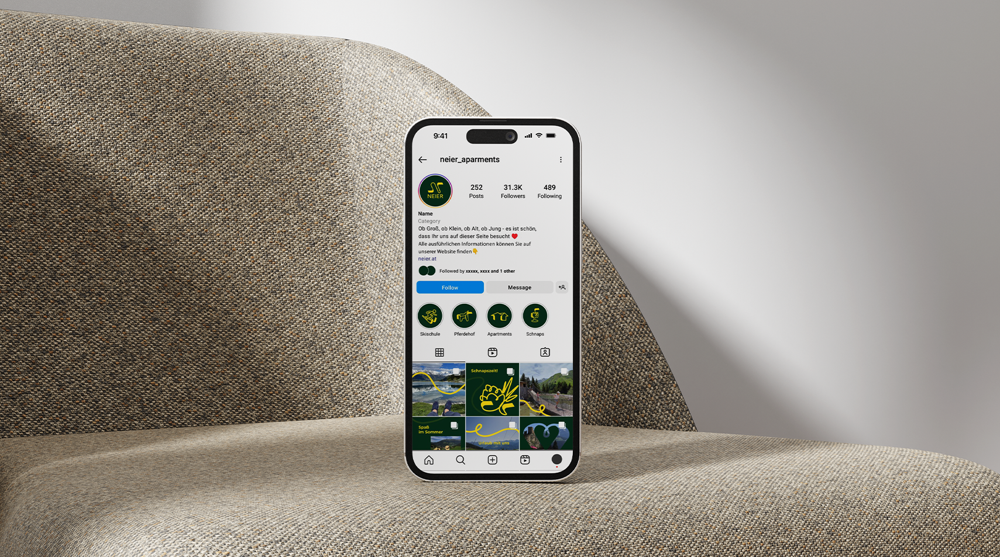
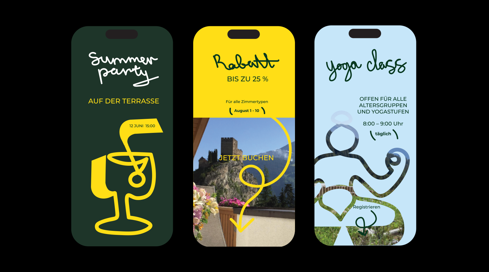

Neier
challenge
Neier Apartments was rebuilding its main building and wanted to update its brand to attract a new audience. It was important to combine active mountain recreation with a sense of comfort, as well as to take into account local features such as a ski school and their own schnapps production.
solution
A flexible identity was created with a logo that combines movement and calmness. The main graphic element - the “living line” - became the basis for the visual style, icons, schnapps label and media materials. The result is a coherent system that can be easily adapted to different formats and accurately conveys the spirit of the brand.



